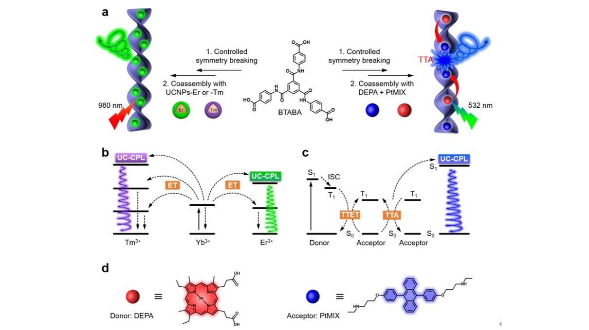

上转换圆偏振发光（upconverted circularly polarized luminescence，UC-CPL）近年来收到了广大的关注。然而，想要制备UC-CPL活性的材料，通常需要手性的物质以共价或者非共价的形式连接。在这项工作中，我们报导了一项从完全非手性的分子开始通过超分子共组装构筑UC-CPL系统的普适性方法。
图 1 非手性系统中上转换的圆偏振发光（UC-CPL）的示意图。 （a）可以通过控制对称性破缺获得具有超分子手性的BTABA组装体。 用有机给体-受体或无机上转换的纳米粒子（UCNPs）掺杂后，在这些共组装系统中成功生成了UC-CPL。 在整个过程中不涉及手性分子。 镧系元素材料（b）或三重态-三重态an灭（TTA）过程（c）中UC-CPL发射的机理图示。 （d）供体DEPA和受体PtMIX的分子结构。
我们发现，非手性C3对称分子可以通过对称性破缺形成手性的纳米螺旋结构，并以此作为手性给体来赋予非手性客体诱导手性和以及CPL活性。这里我们选择了两种不同的光子上转换系统进行尝试，即三重态-三重态photo灭光子上转换（TTA-UC）供体/受体对和无机镧系上转换纳米粒子（UCNPs）。当这两个体系与由非手性C3对称分子制成的手性纳米螺旋共同组装时，就会形成杂化的纳米螺旋结构，并诱导出UC-CPL活性。 通过这种方法，我们证明了UC-CPL材料的制造不需要任何手性分子，从而避免了复杂的手性有机分子和无机手性纳米材料的设计和合成。此外，我们已经证明，可以通过纳米螺旋的螺旋度来调节UC-CPL的极化，这可以通过种子涡旋法来控制。 我们的工作为从完全非手性的构建基元中设计出可调谐UC-CPL材料提供了一种通用方法，极大地扩展了CPL材料的研究范围。
相关结果发表在ACS Nano上（DOI: 10.1021/acsnano.0c08539），文章第一作者为周明浩和桑玉涛 （Doi:10.1002/anie.201900052）